Key Graphs
Below are some of the key graphs from the paper.
APY Crop Kg/Ha Cramers V Heatmap
APY Crop Kg/ Kg Yield Cramers V Heatmap
APY Crop T N2O Cramers V Heatmap
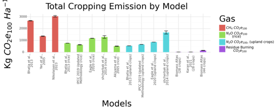
Area National All Models All Emissions
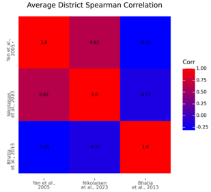
CH4 Farm Size Average Spearman Correlation Heatmap Plotnine
District Residue Burning CO2e Gg Spearman Heatmap
District Residue Burning Kg CO2e Ha Spearman Heatmap
District Rice CH4 Gg Spearman Heatmap

District Rice Kg CH4/Ha Spearman Heatmap
District Rice Kg CO2e Ha Spearman Heatmap
District Rice N2O Gg CO2e Spearman Heatmap
District Upland Crop Kg N2O CO2e Ha Spearman Heatmap
District Upland Crop N2O Gg CO2e Spearman Heatmap
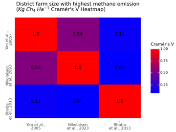
Farm Size Kg/Ha CH4 Cramers V Heatmap
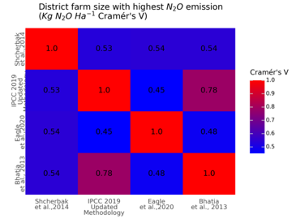
Farm Size Kg/Ha Cramers V Heatmap

Farm Size T CH4 Cramers V Heatmap

Farm Size T N2O Cramers V Heatmap
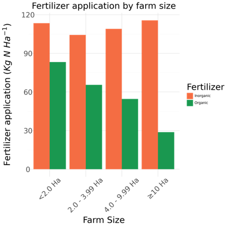
Fert Type By Farm Size
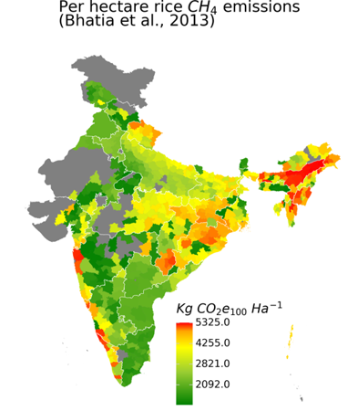
Map CH4 Emissions Kg/Ha Bhatia 2013
Map CH4 Emissions Kg/Ha Nikolaisen 2023
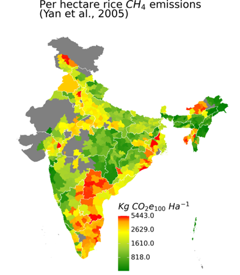
Map CH4 Emissions Kg/Ha Yan 2005
Map CH4 Emissions Max Kg/Ha Bhatia 2013
Map CH4 Emissions Max Kg/Ha Yan 2005
Map CH4 Emissions Min Kg/Ha Bhatia 2013
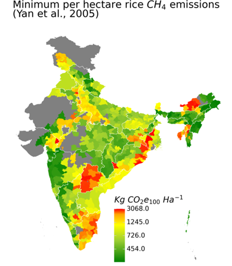
Map CH4 Emissions Min Kg/Ha Yan 2005
Map District Farm Size Max Ha Bhatia 2013
Map District Farm Size Max Ha Nikolaisen 2023
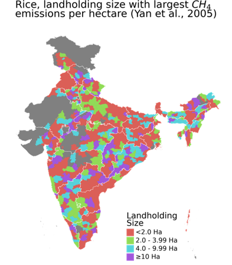
Map District Farm Size Max Ha Yan 2005
Map District Farm Size Max T Bhatia 2013
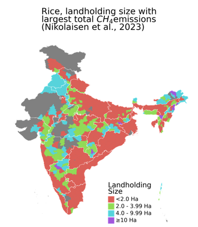
Map District Farm Size Max T Nikolaisen 2023
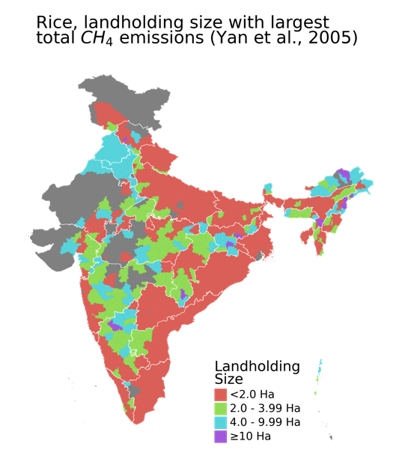
Map District Farm Size Max T Yan 2005
Map District N2O APY Crop Max Ha Bhatia 2013
Map District N2O APY Crop Max Ha Eagle 2020

Map District N2O APY Crop Max Ha Ipcc 2019
Map District N2O APY Crop Max Ha Shcherbak 2014
Map District N2O APY Crop Max T Bhatia 2013
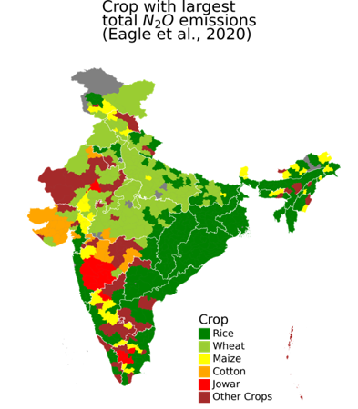
Map District N2O APY Crop Max T Eagle 2020
Map District N2O APY Crop Max T Ipcc 2019
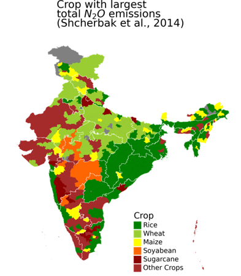
Map District N2O APY Crop Max T Shcherbak 2014
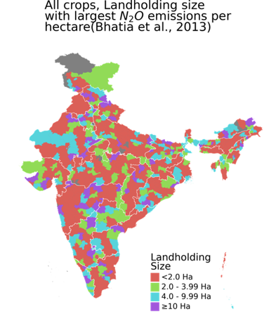
Map District N2O Farm Size Max Ha Bhatia 2013
Map District N2O Farm Size Max Ha Eagle 2020
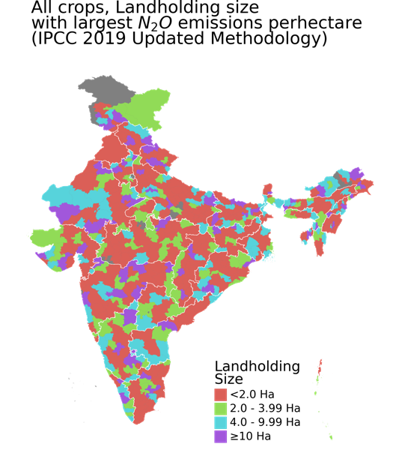
Map District N2O Farm Size Max Ha Ipcc 2019
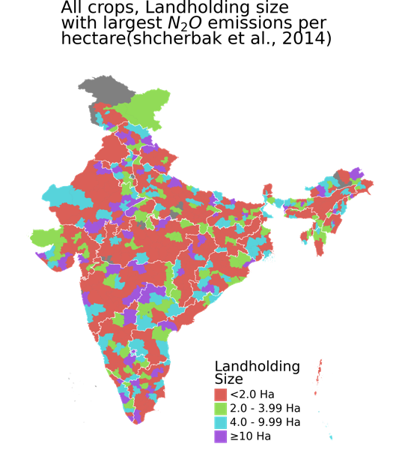
Map District N2O Farm Size Max Ha Shcherbak 2014
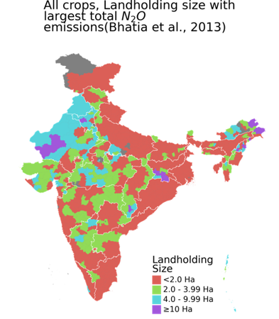
Map District N2O Farm Size Max T Bhatia 2013
Map District N2O Farm Size Max T Eagle 2020
Map District N2O Farm Size Max T Ipcc 2019
Map District N2O Farm Size Max T Shcherbak 2014
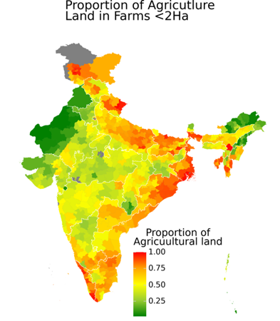
Map Farm Size Proportion Ag Area

Map Maize Kg No2 CO2e100 Kg Yield Bhatia 2013

Map Maize Kg No2 CO2e100 Kg Yield Eagle 2020

Map Maize Kg No2 CO2e100 Kg Yield Ipcc 2019

Map Maize Kg No2 CO2e100 Kg Yield Shcherbak 2014
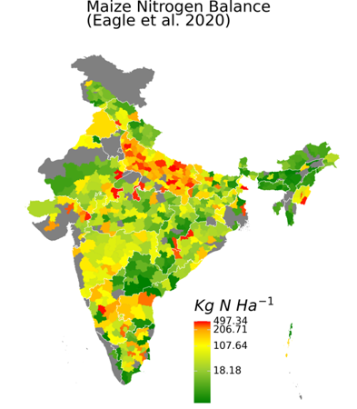
Map Maize N Bal Kg/Ha Eagle 2020
Map Maize N Bal Total Gg N Eagle 2020
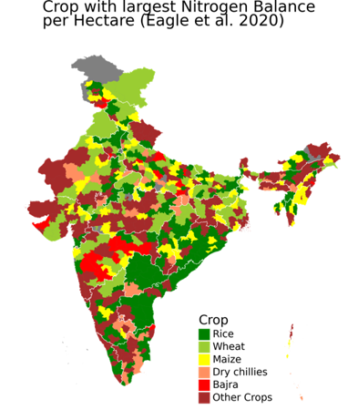
Map Max N Bal 6 Class APY Kg/Ha Mean Eagle 2020
Map Max N Bal 6 Class APY Total Mean Eagle 2020
Map Max N2O 6 Class APY Crop Yield Bhatia 2013
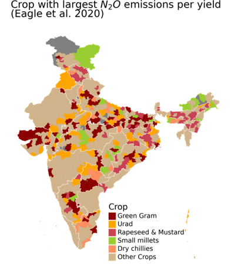
Map Max N2O 6 Class APY Crop Yield Eagle 2020
Map Max N2O 6 Class APY Crop Yield Ipcc 2019
Map Max N2O 6 Class APY Crop Yield Shcherbak 2014
Map N Balance All Crops Kg/Ha Eagle 2020
Map N Balance All Crops Total Gg N Eagle 2020
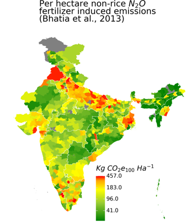
Map N2O Emissions Kg/Ha Bhatia 2013
Map N2O Emissions Kg/Ha Eagle 2020
Map N2O Emissions Kg/Ha Ipcc 2019
Map N2O Emissions Kg/Ha Shcherbak 2014
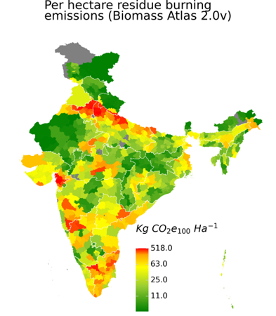
Map Residue Burning Emissions Kg/Ha Biomass Altas V2
Map Residue Burning Karan Emissions Kg/Ha

Map Rice Kg No2 CO2e100 Kg Yield Bhatia 2013

Map Rice Kg No2 CO2e100 Kg Yield Eagle 2020

Map Rice Kg No2 CO2e100 Kg Yield Ipcc 2019

Map Rice Kg No2 CO2e100 Kg Yield Shcherbak 2014

Map Rice N Bal Kg/Ha Eagle 2020
Map Rice N Bal Total Gg N Eagle 2020
Map Rice N2O Emissions Kg/Ha Akiyama 2014
Map Rice N2O Emissions Kg/Ha Bhatia 2013
Map Rice N2O Emissions Kg/Ha Eagle 2020
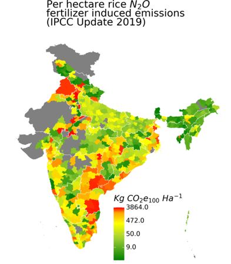
Map Rice N2O Emissions Kg/Ha Ipcc 2019
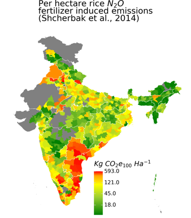
Map Rice N2O Emissions Kg/Ha Shcherbak 2014
Map Rice Total N2O Emissions Gg Akiyama 2014
Map Rice Total N2O Emissions Gg Bhatia 2013
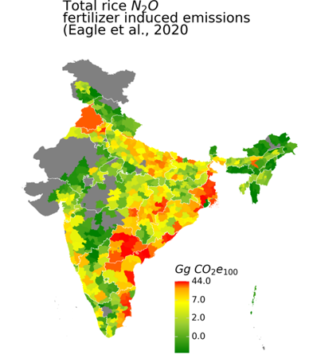
Map Rice Total N2O Emissions Gg Eagle 2020
Map Rice Total N2O Emissions Gg Ipcc 2019
Map Rice Total N2O Emissions Gg Shcherbak 2014
Map Total CH4 Emissions Gg Bhatia 2013
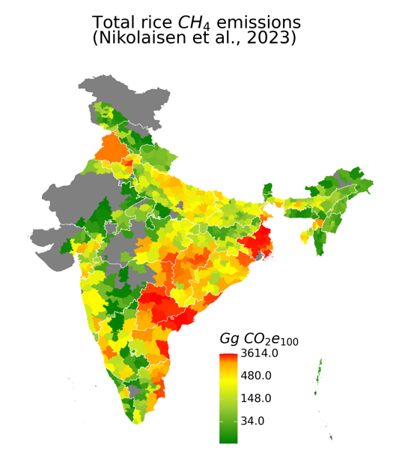
Map Total CH4 Emissions Gg Nikolaisen 2023
Map Total CH4 Emissions Gg Yan 2005
Map Total N2O Emissions Gg Bhatia 2013
Map Total N2O Emissions Gg Eagle 2020
Map Total N2O Emissions Gg Ipcc 2019
Map Total N2O Emissions Gg Shcherbak 2014
Map Total Residue Burning Emissions Gg
Map Total Residue Burning Karan Emissions Gg

Map Wheat Kg No2 CO2e100 Kg Yield Bhatia 2013

Map Wheat Kg No2 CO2e100 Kg Yield Eagle 2020

Map Wheat Kg No2 CO2e100 Kg Yield Ipcc 2019

Map Wheat Kg No2 CO2e100 Kg Yield Shcherbak 2014
Map Wheat N Bal Kg/Ha Eagle 2020
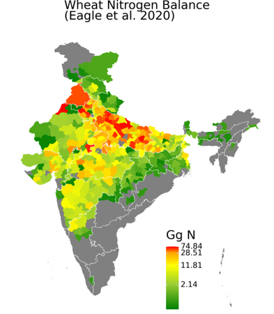
Map Wheat N Bal Total Gg N Eagle 2020
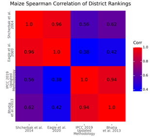
N2O Yield Maize Spearman Correlation Heatmap Plotnine
N2O Yield Rice Spearman Correlation Heatmap Plotnine
N2O Yield Wheat Spearman Correlation Heatmap Plotnine
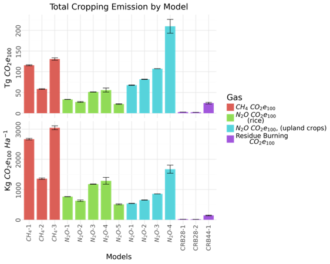
National All Models All Emissions Facet
National Edf Models All Emissions
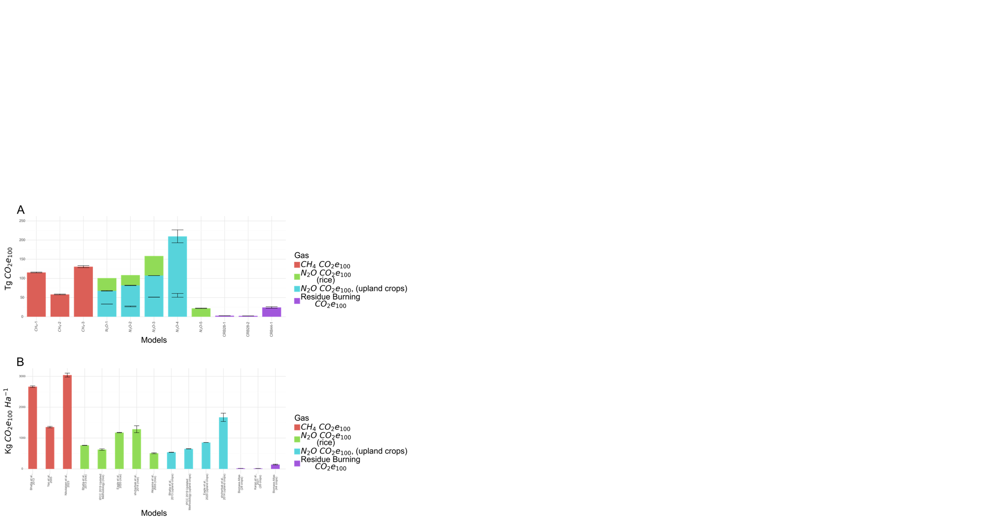
National Total Mean All Emissions
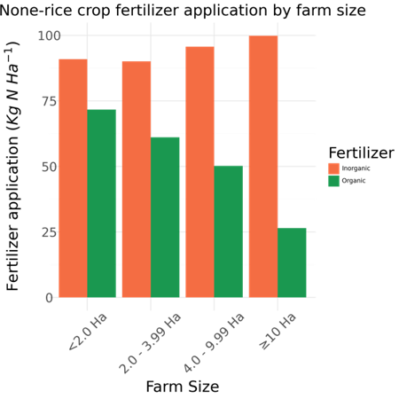
None Rice Crop Fert Type By Farm Size
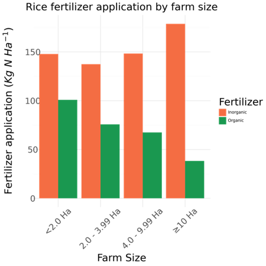
Rice Fert Type By Farm Size
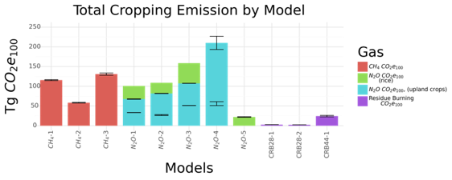